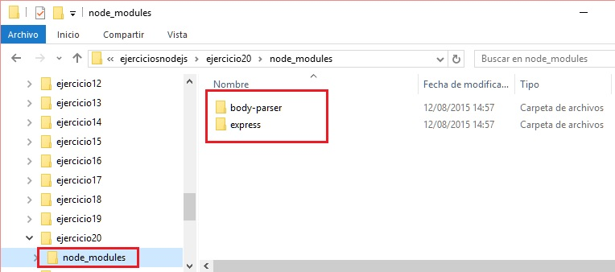
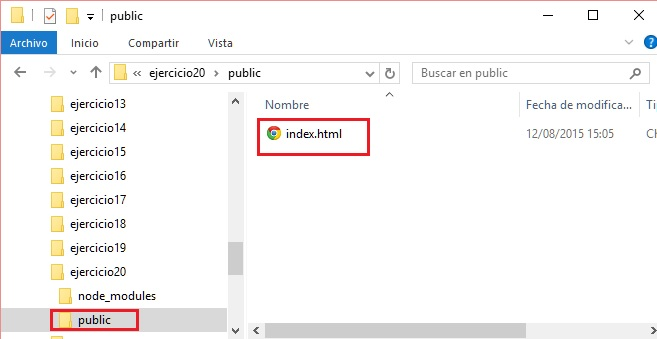
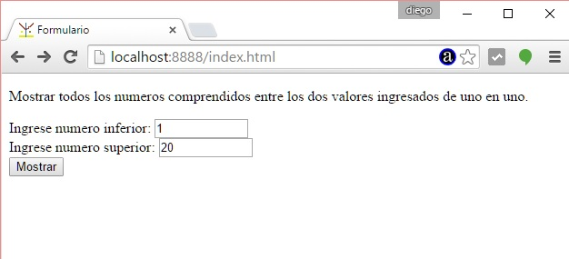
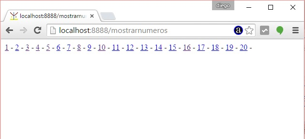
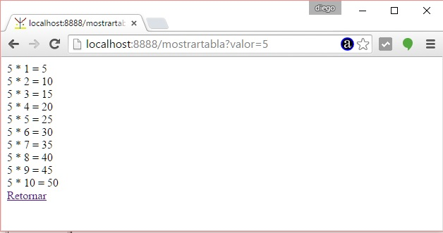

Express lo definen sus autores como un framework minimalista, esto hace que muchas de las actividades de nuestra aplicación debemos codificarlas o utilizar otros módulos de terceros.
Para recuperar los datos de un formulario HTML o los parámetros de una url debemos agregar además del framework Express una módulo para parsear los datos que llegan del navegador. Hay muchos módulos que hacen esta actividad el más común es el módulo 'body-parser'.
Confeccionar una aplicación que permita ingresar dos enteros por teclado. Luego al presionar el botón submit generar una página dinámica mostrando todos los números comprendidos entre el primer valor y el segundo de uno en uno. Los números mostrarlos como hipervínculos que al ser presionados generen una página dinámica con la tabla de multiplicar del valor seleccionado.
Primero crearemos la carpeta donde alojaremos nuestro proyecto: ejercicio20.
Ya tenemos la carpeta ejercicio20 creada ahora nos posicionamos en dicha carpeta y procedemos a instalar el framework 'express' y el módulo 'body-parser':
c:>ejerciciosnodejs\ejercicio20\npm install express
Y luego:
c:>ejerciciosnodejs\ejercicio20\npm install body-parser
En realidad el orden en que instalamos los módulos es indistinto pero luego de esto si vemos el contenido de la carpeta node_modules veremos que tiene las dos carpetas con los respectivos módulos:

Ahora procedemos a crear la carpeta public dentro de la carpeta ejercicio20 donde dispondremos la página estática HTML donde hay un formulario que pide el ingreso de dos números:

Su contenido es:
index.html
<!DOCTYPE html> <html> <head> <title>Formulario</title> </head> <body> <p>Mostrar todos los numeros comprendidos entre los dos valores ingresados de uno en uno.</p> <form action="mostrarnumeros" method="post"> Ingrese numero inferior: <input type="text" name="numero1" size="10"><br> Ingrese numero superior: <input type="text" name="numero2" size="10"><br> <input type="submit" value="Mostrar"> </form> </body> </html>
Creamos finalmente la aplicación de Node.js para servir páginas estáticas, recuperar datos del formulario HTML y finalmente recuperar datos de parámetros de hipervínculos.
La aplicación la creamos en la carpeta 'ejercicio12' y le damos como nombre app.js:
var express = require('express');
var app=express();
var bodyParser = require('body-parser');
//especificamos el subdirectorio donde se encuentran las páginas estáticas
app.use(express.static(__dirname + '/public'));
//extended: false significa que parsea solo string (no archivos de imagenes por ejemplo)
app.use(bodyParser.urlencoded({ extended: false }));
app.post('/mostrarnumeros', function (req, res) {
var num1=req.body.numero1;
var num2=req.body.numero2;
num1=parseInt(num1);
num2=parseInt(num2);
var pagina='<!doctype html><html><head></head><body>';
for(var x=num1;x<=num2;x++)
pagina += '<a href="/mostrartabla?valor='+x+'">'+x+'</a>'+' - ';
pagina += '</body></html>';
res.send(pagina);
})
app.get('/mostrartabla', function (req, res) {
var num=req.query.valor;
num=parseInt(num);
var pagina='<!doctype html><html><head></head><body>';
for(var x=1;x<=10;x++) {
var tabla=num * x;
pagina += num + ' * ' + x + ' = ' + tabla + '<br>';
}
pagina += '<a href="index.html">Retornar</a>';
pagina += '</body></html>';
res.send(pagina);
})
var server=app.listen(8888,function(){
console.log('Servidor web iniciado');
});
Lo nuevo que aparece es que requerimos el módulo 'body-parser':
var bodyParser = require('body-parser');
Lo enlazamos con Express llamando al método use y pasando lo que devuelve la función urlencoded:
app.use(bodyParser.urlencoded({ extended: false }));
La página estática la retorna Express ya que registramos el directorio que debe servir páginas estáticas:
app.use(express.static(__dirname + '/public'));
Cuando presionamos el botón 'submit' de nuestro formulario la propiedad action tiene el valor action="mostrarnumeros", esto hace que nuestro programa capture dicha ruta con el siguiente código:
app.post('/mostrarnumeros', function (req, res) {
var num1=req.body.numero1;
var num2=req.body.numero2;
num1=parseInt(num1);
num2=parseInt(num2);
var pagina='<!doctype html><html><head></head><body>';
for(var x=num1;x<=num2;x++)
pagina += '<a href="/mostrartabla?valor='+x+'">'+x+'</a>'+' - ';
pagina += '</body></html>';
res.send(pagina);
})
Es aquí donde recuperamos los dos controles del formulario mediante el objeto 'req' que tiene una propiedad 'body' y dentro de esta podemos acceder a todos los 'name' que definimos en el formulario HTML (si no utilizamos el módulo 'body-parser' luego la propiedad req.body tiene el valor undefined):
var num1=req.body.numero1;
var num2=req.body.numero2;
Los convertimos a entero los valores recuperados:
num1=parseInt(num1);
num2=parseInt(num2);
Y finalmente generamos la página en forma dinámica con todos los enlaces con cada número comprendido entre los valores ingresados de uno en uno:
var pagina='<!doctype html><html><head></head><body>';
for(var x=num1;x<=num2;x++)
pagina += '<a href="/mostrartabla?valor='+x+'">'+x+'</a>'+' - ';
pagina += '</body></html>';
Enviamos al navegador la página generada dinamicamente:
res.send(pagina);
Si iniciamos el programa de node y solicitamos la página estática al navegador tenemos:

Y cuando presionamos el botón 'submit' podemos observar todos los valores comprendidos entre el primer y segundo valor ingresado:

Cada número que se muestra es un hipervínculo que tiene un parámetro llamado valor junto con el número propiamente dicho. Cuando el operador presiona el hipervínculo se captura el path del mismo con el siguiente codigo Node.js:
app.get('/mostrartabla', function (req, res) {
var num=req.query.valor;
num=parseInt(num);
var pagina='<!doctype html><html><head></head><body>';
for(var x=1;x<=10;x++) {
var tabla=num * x;
pagina += num + ' * ' + x + ' = ' + tabla + '<br>';
}
pagina += '<a href="index.html">Retornar</a>';
pagina += '</body></html>';
res.send(pagina);
})
Acá de forma similar recuperamos el dato que viene en el hipervínculo mediante la propiedad 'query' del objeto 'req':
var num=req.query.valor;
Luego de convertirlo a entero pasamos a generar la página HTML dinámica con la tabla de multiplicar de dicho valor:
num=parseInt(num);
var pagina='<!doctype html><html><head></head><body>';
for(var x=1;x<=10;x++) {
var tabla=num * x;
pagina += num + ' * ' + x + ' = ' + tabla + '<br>';
}
pagina += '<a href="index.html">Retornar</a>';
pagina += '</body></html>';
Enviamos al navegador la página:
res.send(pagina);
En pantalla tenemos como resultado:

Este proyecto con Express y body-parser lo puede descargar en un zip con todos los archivos desde este enlace : ejercicio20